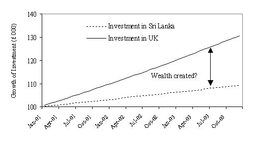
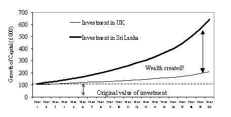

Interventions · August 2004
On the Influence(s) of Expatriate Property Developers in Post-civil War Sri Lanka
Urban areas have their own specific characteristics, which affect how they evolve through times of success and failure. The Property development industry plays an integral role in the evolution of cities as urban growth and development takes place on landed property, and involves various land development processes. Well functioning land and property markets are a key determinant of this development process as well as of the quality and quantity of such produced landed properties. In this respect, the governments all over the world have been encouraging ‘partnership’ of the public and private sectors in urban property development and ‘partnership’ has become one of the most popular terms in the urban development lexicon (Jones and Pisa, 2000). From a strict economic perspective, with or without government intervention, the markets are supposed to ensure that investments in building do not turn out to be ‘white elephants’ resulting in prolonged tied-up capital. Tied up capital indicates the existence of high opportunity costs, resource allocation inefficiency, ineffective investment appraisal, lack of resource recycling and distorted factor markets (Fitzwilliam, 1991).
Property developers in the private sector often tend to manipulate one or many of these factors to maximise their profits and as well as for pertaining to social, cultural and political reasons. (Hallalala and Mang’waru, In press). These kinds of manipulations are problems paramount in the developing nations in South Asia. Over exploitation of the markets by the private sector property developers is often attributed to the views and economic policies adopted by the governments.
“Because of the 1997/98 crash of East Asia, Russia and some of Latin America macroeconomic orthodoxy is now thoroughly discredited, and if in the wake of the Long Term Capital Management disaster, even Nobel-Prize winning economic models are in disrepute, the cost-recovery instincts associated with neo-liberal service delivery, nevertheless, remain a significant deterrent to social process”.
(Bond, 1999, p43).
The focal point of this article is on the current property development scenario of Sri Lanka, which covers a total area of 65,610 square kilometres and with an ever increasing population of exceeding 17 million inhabitants. Once predicted to be a possible ‘economic tiger nation’ that could have easily become the next Singapore, the island’s economy deteriorated due to the civil war conditions in the last three decades of the past century. With an economy that is still struggling to recover, the government banks on the island's strategic location (in the Indian Ocean on the major air and sea routes between Europe and the Far East) as a future global logistics hub. Sri Lanka has the highest literacy rate in South Asia (92%) and a work force accounts for 35% of the total population. In addition, Sri Lanka has the lowest labour cost per worker in manufacturing in the South Asian region (World Bank, 2000). Based on these factors, foreign investment is encouraged, and the government has opened up Free Trade Zones where, foreign investors can start businesses, with tax benefits and incentives provided by the government (BOI, 2003).
Re-distribution of the population masses towards the city centres have occurred as a result of the civil war and Colombo, the business capital of Sri Lanka has become one of the most congested cities in South Asia. With increasing population concentrations in Colombo and surrounding regions, there is a considerable demand for housing and township development. In view of this, the participation of private parties in the development of the housing sector is highly regarded (BII, 2003). Consequently, in order to facilitate this, the Government of Sri Lanka now offers very attractive incentive packages to both local and foreign investors (BOI, 2003).
The United Kingdom boasts of a highly mobile and well-established Sri Lankan expatriate community. These are the people who are beginning to feel aroused in their inner senses by the recent developments in the peace processes in their homeland. Having acclimatised to the life in the west, many now feel drawn by their childhood memories to go back to Sri Lanka in search of mental peace. However, as Sri Lanka is always going to be Sri Lanka with its shortcomings and simplicities they have their reservations about coming back permanently. This is a group of individuals with the hard currency to spend, whom can be manipulated in many ways if you could let them have a piece of Sri Lanka with all the Western comforts.
Along these lines, I herby present a case study of a London based Property developing company owned by Sri Lankan expatriates, which is involved in property development in the Colombo suburbs. ‘Faulty Towers’ (name of company changed for obvious reasons) specialise in is building (London style condominium apartments) and selling properties in Colombo to the Sri Lankan expatriates. The prospectus for the company’s Colombo based project has the following text:
“ Faulty Towers offers all the facilities of a prestigious hotel with the privacy and comfort of your own high specification apartment. Each apartment is fitted with kitchen cupboards and sanitary ware imported from branded European suppliers. These high specification apartments offer spacious living accommodation on a perfect beachfront location… The development offers a beach side lifestyle but with easy access to both the city and airport. Faulty Towers represents a fantastic opportunity for investment as a holiday home, business base or permanent residence. Faulty Towers could be the perfect choice for you…”
The phrases ‘branded European suppliers’ and ‘high specification apartments’ have been highlighted. My argument(s) is/are: ‘when housing, which is a basic need for a human being, is a problem that has been a constant worry to the bureaucrats (no matter which political ideologies they subscribe to) in Sri Lanka; where do high specification apartments stand in this equation?’ ‘Furthermore, when the average wage earners of this city are forced to share even the basic sanitary facilities with countless many others - how can one living in such a condominium feel morally satisfied in using a toilet that has a European designer’s name for the purpose of disposing bodily waste’?
Inquiries on this aspect led me to find out that the Faulty Towers have a project almost nearing completion in Wellawatte, a crowded suburb in Colombo. Whilst on a short visit to Sri Lanka from the UK in June 2003, the Faulty Towers apartments was observed to be getting shape by the Wellawatte Railway Station near the Bambalapitiya canal, an open drainage system that feeds into the Sea near the building site. The ‘idyllic locations’ the brochure boasted were hardly to be found by the construction site. Ironically, the smelly Bambalapitiya canal over flowing with sewage, the railway station opposite and the mini-slum near St. Peter’s place provide a snapshot of the stark reality of the metropolis of Colombo and of the marginal existence of the Sri Lankan citizens living far below the poverty line. On further inquiries, it was found that almost the entire set of apartments bar a few have been already bought by London based Sri Lankans (the estimated value of a property: between £70-95,000). Most of the properties bought in this regard are to be used as holiday homes and will remain unused over the major part of the year (information gathered from a telephone conversation¶ in the Spring of 2003 in London). This is an alarming situation in a third World City that has an exponentially growing basic shelter problem. Properties in urban areas should have both ‘use’ and ‘exchange’ values in urban development. Use value indicates the utility the occupants gain from the buildings such as shelter, privacy, workspace, and the sense of identity (Fitzwilliam, 1991), which will not be properly gained in this scenario. Exchange value means the monetary value of a building that arises from its potential to generate rents and investment for its owner and refers to the value of the building as a commodity in the market (Kironde, 1991). In truth, all the properties in this building project that sold to expatriates, with the price-tag of £70,000+, will be valued for less in the local property market due to the location and surrounding environmental factors (pers. comm. S. Seevaratnam, Peoples Bank, Sri Lanka, 2003). Furthermore, partially unoccupied properties such as the condominiums bought by the Sri Lankan expatriates consume quite substantial amounts of money and other resources, which could be used for better alternative investments for urban development than remaining in the form of tied-up capital (Hallala and Mang’waru, In press).
Sri Lanka being a developing nation has higher interest rates, which are enforced by the Fiscal Policy to encourage savings and minimise spending by the masses. It is the opposite in the UK where, interest rates are low and spending encouraged. Assuming that the interest rate on savings in Sri Lanka and the UK are 9% per annum and 3% per annum respectively, we present a model of how the Faulty Towers could possibly be manipulating the financial markets to maximise profits. Sri Lankans in the UK pay (either in whole amounts or instalments) the Faulty Towers, in Sterling Pounds or equivalent for the properties they buy in Colombo. In addition to that, the Faulty Towers acquires a loan from a UK financial institution and invests the pooled up money in a financial institution in Sri Lanka. Figure 1 shows the growth of investment for a sum of £100,000 over a period of 3 years (the speculated period for completion of a property development project by Faulty Towers). At the end of the third year the sum invested will yield £30,864 if invested in Sri Lanka compared to £9,405 if invested in the UK. The threefold interest earned in Sri Lanka would be sufficient to cover the administrative and production costs of the property (pers. comm. S. Seevaratnam, Peoples Bank, Sri Lanka, 2003).

Figure 1: The conceptual model for the speculated investment strategy of the Faulty Towers’ over the three years of a building project. We assume that the sum was invested at the beginning of 2001. The returns in Sri Lanka and the UK have a 3:1 ratio, which is a product of the interest rates of the respective countries
Speculating further, (considering the same assumptions) if we are to simulate the growth of an investment over a 20-year period, the capital invested would have tripled its original value if invested in Sri Lanka (Figure 2). However, this does not consider the future Net Present Value (NPV) of the original sum invested after 20 years of maturity. Even after discounting for NPV, the returns gained in Sri Lanka will be substantially higher than the sums earned in the UK (pers. comm. S. Seevaratnam, Peoples Bank, Sri Lanka, 2003). This implies that by manipulating on the interest rates the Faulty Towers would have earned additional wealth in addition to the money earned from sale of the properties built. As the company is UK based the wealth created will be pumped back into the money market in Britain, which will influence a negative impact on the Sri Lankan economy. If this were the case for a single property developer, the magnitude of the negative impact will be substantial if considering a number of these companies.
|  |
Figure 2: A hypothetical model to illustrate the Faulty Towers’ capital growth over 20 years.
This provides us with a grim view of how a third world economy’s money market is exploited. If the income generated in any country is not re-cycled within the local system, it is detrimental to a weakened economy (Cheshire and May, 1989) such as Sri Lanka that has a huge national debt (estimated as $13.9 Billion as at on the year end 2000; World Bank, 2000). Aid organisations frequently criticise the government’s lack of insight on these matters and proclaim that the Sri Lankan poverty strategy is totally unacceptable as the plans benefit rich investors, fail to offer adequate safety nets (Christian Aid, 2003).
In this article, I have presented an insight to how the local money markets are manipulated by Sri Lankan expatriate property developers based in the west. Furthermore, I present an argument (hypothesis?) on how the interest rates can be exploited to generate wealth, which on the long run will be detrimental to the economy, as it does not provide for financial recycling, which is essential for growth. The need for further in-depth research is emphasised. Future research should concentrate on field-based investigations on both sides of the spectrum from a holistic socio-economic perspective.
Acknowledgements:
The author wishes to thank the late Mr. S. Seevaretnam, Senior Banker, People’s Bank, Sri Lanka for the stimulating discussions pertaining to the matters covered in this article.
References:
BII (Bureau of Infrastructure Investment, Sri Lanka), 2003. http://www.bii.lk (accessed on the 11th November 2003).
BOI (Board of Investment, Sri Lanka), 2003. The BOI portal. http://65.17.193.48/index.asp (accessed on 11th November 2003).
Bond, P., 1999. Basic infrastructure for socio-economic development, environmental protection and geographical desegregation: South Africa’s unmet challenge. Geoforum, 30, 43-59.
Cheshire, P., and Hay, D., 1989. Urban Problems in Western Europe: an economic analysis. Unwin: Hyman.
Christian Aid, 2003. Sri Lanka poverty strategy ‘totally unacceptable’, say Christian aid partners/ 03.07.03. In: Christian Aid News. http://www.christian-aid.org.uk/news/stories/030703s.htm (accessed on 11th November, 2003).
Fitzwilliam, M., 1991. Land value changes and the impacts of urban policy upon land valorization processes in developing countries: Conclusions of an international workshop, Cambridge University Fitzwilliam college 14-19, July 1991. International Journal of Urban and Regional Research, 15(4), 623-628.
Hallala, F., and Mang’waru, W., In press. Implications of landed and tied-up capital on urban development: the unfinished and unoccupied buildings of Dar es Salam in Tanzania. Habitat International.
Jones, G. A., and Pisa, R. A., 2000. Public-private partnerships for urban land development in Mexico: a victory for hope versus expectation? Habitat International, 24, 1-18.
Kironde, J. M. L., 1991. Land scarcity amidst land abundance: the paradoxes of land policy in urban Tanzania. Open University Press, UK.
World Bank, 2000. World Development Report 1999/2000: Entering the 21st Century: The Changing Development Landscape. Oxford University Press.
¶ Posing as a ‘fictional’ social scientist from UCLA (University College of Los Angelis), via e-mail and her research assistant (via phone) I was able to talk to the Managing Director of the ‘Faulty Towers’; who to (my surprise) at one point openly said that anything can be done in the third world if you are prepared to pay for it.
Manoharadas Manobavan, Centre for Earth and Environmental Science Research, Kingston University. Now at: Department of Agronomy, Faculty of Agriculture, Eastern University, Sri Lanka. (Corresponding author: e-mail, b4v4n@yahoo.co.uk)